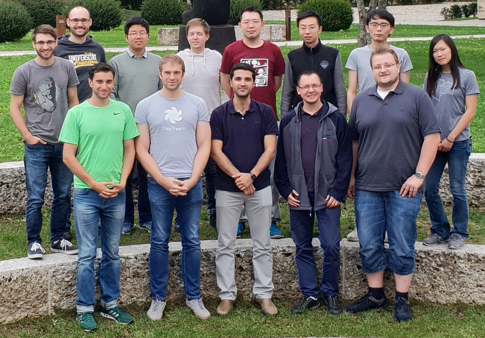
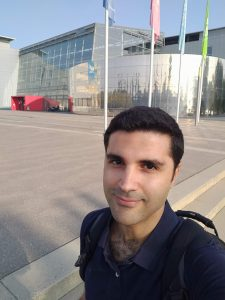
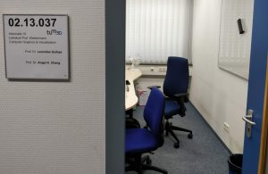
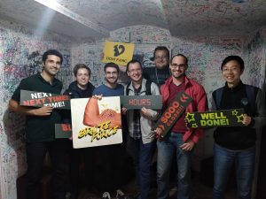
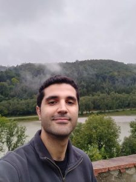
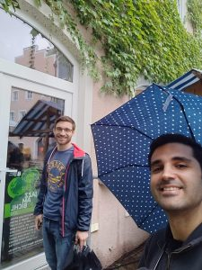
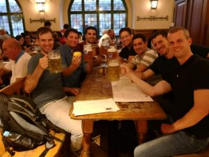

Reasearch visit in Germany – Prof. Matthias Niessner’s Visual Computing Group (TUM)

When I started writing this post I thought it would be a chronologically ordered technical documentation of my research visit. Eventually, I found it much more coherent when divided into major events and it came out much less technical than I immagined.
How it all came to be?
It was a series of lucky coincidences that led to this research visit. I was searching for potential post-doc advisors and Prof. Matthias Niessner‘s name came up. I obviously knew the name from his work at Stanford but I wasn’t aware (at that time) that he was building his new research group in TUM. I immediately added his name to my long and meticulously organized list of potential supervisors and moved on to other things. The very next day Prof. Fischer ( my PhD. supervisor) casually informed me of a funding opportunity to do a short research visit in Germany. It felt like fate. I immediately sent Matthias an email and with the huge help of Marianne Krueger-Jungnickel from the Life Science Network (and after some interviews and skype calls) we set it up.
I visited the Visual Computing group (Department of Informatics, Technical University of Munich) for 4 weeks (28.8-25.9) as the kick-off of an ongoing collaboration.

The people
During my visit, I had the privilege to get to know so many amazing people (hopefully the following links won’t break as time goes by and they move on to bigger and better things). The first to greet me was Andreas Rössler who turned out to be my “go to guy” whenever I had a question about anything. Make sure to check out his FaceForensics work.
I was so excited to get a temporary office with these names on the door:

My new office-mates were Manuel Dahnert (who just returned from a vacation and gave a talk about his research on 3D model retrieval the next day) and Yu-Shiang Wong who was visiting from University College London (supervised by Niloy Mitra).
This group is composed of truly amazing people from all around the world: from Bosnia (Dejan Azinović working on inverse rendering), Slovenia (Aljaž Božič working on tracking and reconstructing non-rigidly deforming objects in dynamic environments), and China (Ji Hou working on 3D scene understanding). From Germany, there is also Armen Avetisya working on 3D Alignment and Object retrieval between Scan and CAD, but he has the temperament of an Israeli. Other visitors include Lei Han, Xiaochen Fan, and Jingwei Huang.
That week I also met the group’s postdocs: Angela Dai (which I occasionally disturbed with questions about her amazing ScanNet dataset), and Justus Thies (commonly known as the Face2Face guy), I am sure they will become great professors one day (if they choose to be).
During my visit, I also met Manolis Savaa, and Nills Thuerey (we shared some lunchtime together). In addition, I had the privilege to get to know Angel X. Chang as she gracefully agreed to share her office with me.
Even though the visit was relatively short we all became good friends. and I am sure it was just the beginning of some great friendships. We even went to an escape room together! (which was very different from the Israeli escape rooms… mainly because, they let us loose…)

The Retreat
When an average person reads an email about a weekend retreat at a village near the Austrian border he probably imagines long hikes across wooded areas, some social, team building activities, and a lot of free time to get to know one another… There is nothing average about this group. The “don’t forget to bring your laptops” message gave it away immediately. The retreat was essentially a CVPR submission Bootcamp, and it was a great one! Even though I already published several papers (unfortunately no CVPR… yet…), I learned a lot. The retreat included hands-on workshops like paper speed-reading, CVPR drafts overview, and “How to present your (friend’s) work” where we had an hour to prepare a 5-minute presentation about someone else’s work. We also went on a hike and some drinks (does anyone remember where we put the tiger?) 🙂


ECCV 2018
ECCV 2018 was conveniently located in Munich during my stay. I could not lose a full week of work but I was able to attend some very interesting talks and workshops.
Next, I attended an inspiring talk by Alyosha Efros which introduced the concept of curiosity-driven exploration. Instead of engineering dense rewards into a reinforcement learning they simply let the agent “wander aimlessly around the world” and try to predict its next state given the current state and an executive action. Their method was able to train a Mario (from Nintendo Super Mario Brothers) to advance levels without ever explicitly rewarding the agent for that. Truly an amazing work. Here is a link to the video.
Sukkot – Feast of Tabernacles (lets build a hut outside holiday 🙂 )
I was lucky to have some Israeli friends around for Rosh Hashanah to have some traditional apple with honey with me (and beer).

Oktoberfest
During my stay I took only one full day off, it was the Sunday I visited the Oktoberfest (which had the opening ceremony the day before). It was the perfect time to meet my old friend Daniel Weimer, and his better half Beate. Daniel is now Head of Artificial Intelligence at Volkswagen Group in the Americas region. He recently moved to the US and happened to come to Munich for some final arrangements. Daniel spent 8 months at our lab 3 years ago. He is actually the guy who introduced the field of deep learning to me (more precisely, he introduced its amazing strengths and results on images). After a few beers, we realized the butterfly effect some people have on your life. Daniel is one of those butterfly people for me. Thank you, my friend, hope we meet again soon.
Research
This section will be filled in detail after publication 🙂 I can just say that the topic is super interesting and I can’t wait to share it.
Summary
My research visit was a very educating experience. I met so many interesting people and worked with the best of the best. I would like to thank several people who had an integral part in the success of this visit :
First and foremost, I would like to thank Prof. Matthias Niessner for having me. Matthias’s time is his most valuable resource and I really appreciate him investing it in me.
Second, I would like to thank Marianne Krueger-Jungnickel from the Life Science Network who kickstarted this whole experience. I don’t think this would have been possible without her support.
Saving the best for last – I would like to thank my strong and supportive wife Anna for making it possible and taking care of Shaked and Keshet for 4 weeks… during the holidays… by herself… Only someone with kids can understand that she did the heavy lifting here 🙂